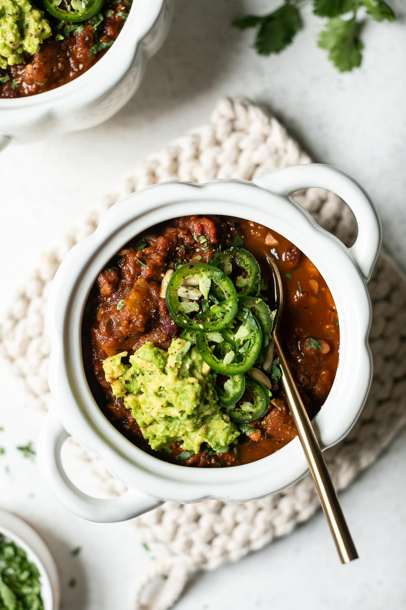

Pumpkin Chili

Ingredients
- 3 cans of beans (black, kidney, black-eyes...) or boils and prepare 4 dl of dried beans
- 1 Hokkaido pumpkin or similar
- 1 Large Carrot
- 1 Red bell pepper
- 2 tsp Ground Cumin
- 2 tsp Oregano
- 2 cloves Garlic
- 1 Chili
- 1 Onion
- 2 tbsb Soy sauce
- Olive oil
To serve
- Tortilla chips
- Diced avocado
- Chopped onion
- Hot sauce
Steps
- Cut the pumpkin in 4 pieces. Remove the innards.
- Steam the pumpkin for 20-30 minutes, until soft
- Blend the pumpkin to a pure and put aside.
- Chop the onion, garlic and chili
- In a large pot, warm up the olive oil on medium heat
- Add the onion, bell pepper and carrot, and fry for about 5 minutes
- Add the chili and garlic and fry for an additional minute
- Add the soy sauce, coreander and ground cumin
- Now add the beans and pumpkin pure. If it's too thick, add some how water
- Bring to a boil and then let it simmer for half an hour or longer
- Serve with avocado, chips, onion, hot sauce, cilantro and what else you feel like.